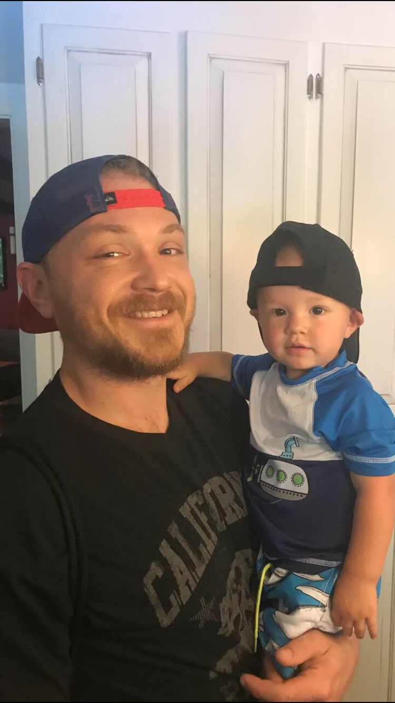

About Me
My name is Darren Hall and I’m a Full Stack Developer from Richmond, Virginia. I am currently enrolled in a 24-week coding boot camp at the University of Richmond, with a graduation date of 10/26/2019. Through immersive study and experience with the most powerful dev tools, I have quickly honed my skills and packed years-worth of learning into the last 6 months. I’m actively seeking a fast-paced, challenging environment where I can create great software and continue to expand my knowledge
I've held many different jobs in the past, but I never found the one I could see myself loving forever. Once my son was born I became determined to find a more rewarding career, so I began taking undergrad classes at U of R's School of Professional & Continuing Studies. After taking Local Area Networks & Penetration Testing/Ethical Hacking classes, I decided to take the much, much, much more condensed approach of the coding boot camp. It has been the challenge of a lifetime but I'm so glad I accepted the challenge and I'm eager to continue learning.